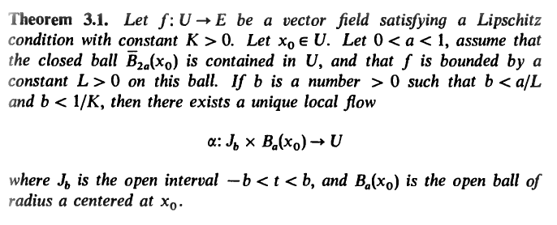

Let $X\in \mathfrak{X}(M)$ be a vector-field; given an interval $I\subset\mathbb{R}$, a curve $\gamma:I\to M$ is an integral curve for $X$ if $$X_{\gamma(t)}=\dot{\gamma}(t)\quad \forall\,t\in I\;.$$
Given $V\subseteq M$ and $I\subseteq\mathbb{R}$, a map $\Phi:I\times V \to M$ is called local flow of $X$ if
- $\Phi(0,p)=p$ for $p\in V$
- $\phi_p:I\to M$ given by $\phi_p(t)=\Phi(t,p)$ is an integral curve for $X$ for all $p\in V$.
If $\gamma$ is an integral curve for $X$, then $X_{\gamma(t)}=\dot{\gamma}(t)$, which means that $X_{\gamma(t)}(f)=(f\circ \gamma)'(t)$; if we take $f$ as a coordinate function $x^j$, then $$X^j_{\gamma(t)}=X_{\gamma(t)}(x^j)=(x^j\circ\gamma)'(t)\;.$$
If we express $\gamma$ in local coordinates, we end up with $k$ ODEs of the form $X^j(\gamma_1,\ldots, \gamma_k)=(\gamma_j)'$ where $X^j$ are smooth functions from an open set of $\mathbb{R}^k$ to $\mathbb{R}$.
If we fix the variable $t$ instead, we obtain $\phi^{(t)}:V\to M$ given by $\phi^{(t)}(p)=\Phi(t,p)$; notice that, if $t,s,t+s\in I$ and if $\phi^{(s)}(p)\in V$, then $$\phi^{(t)}\circ\phi^{(s)}(p)=\phi^{(t+s)}(p)\;.$$
A one-parameter group of diffeomorphisms is a collection of diffeomorphisms $\phi^{(t)}:M\to M$ for $t\in\mathbb{R}$ such that
- $\phi^{(t)}\circ\phi^{(s)}=\phi^{(t+s)}$ for all $t,s\in\mathbb{R}$
- $\phi^{(0)}(p)=p$ for all $p\in M$
- $(t,p)\mapsto \phi^{(t)}(p)$ is smooth from $\mathbb{R}\times M$ to $M$.
Given a one-parameter group of diffeomorphisms $\{\phi^{(t)}\}_t$, consider the curve $\gamma_p(t)=\phi^{(t)}(p)$; the vector-field $X_p=\dot{\gamma}_p(0)$ is called infinitesimal generator of the one-parameter group.
A global flow of a vector-field $X$ is a local flow defined on $\mathbb{R}\times M$.
Every one-parameter group of diffeomorphisms is given by the global flow of its infinitesimal generator.
Let $X$ be a vector-field on $M$ and $f$ a smooth function; denote by $\Phi$ a local flow of $X$ near $p\in M$ and by $\phi^{(t)}$ the diffeomorphisms obtained by fixing $t$.
The Lie derivative of $f$ along $X$ is $$(\mathcal{L}_Xf)(p)=\frac{d}{d t} {\bigg\vert}_{t=0} ((\phi^{(t)})^*f)(p)=\lim_{t\to 0}\frac{((\phi^{(t)})^*f)(p)-f(p)}{t}\;.$$
Unravelling the definitions, $\mathcal{L}_Xf=Xf$.
If $Y$ is another vector-field on $M$, we define its Lie derivative in the same way: $$\left(\mathcal{L}_XY\right)_p=\frac{d}{d t} {\bigg\vert}_{t=0} ((\phi^{(t)})^*Y)_p$$
however, it is more convenient to use a pushforward, as we are dealing with a vector-field, so we notice that for a diffeomorphism $\psi^*=(\psi^{-1})_*$ and $(\phi^{(t)})^{-1}=\phi^{(-t)}$, so $$\left(\mathcal{L}_XY\right)_p=\frac{d}{d t} {\bigg\vert}_{t=0} ((\phi^{(-t)})_*Y)_p$$
which gives $(\mathcal{L}_XY)f=X(Y(f))-Y(X(f))$.
Given $X,Y\in\mathfrak{X}(M)$, their commutator (or Lie bracket) is denoted by $[X,Y]$ and is a vector-field defined by $$[X,Y](f)=X(Y(f))-Y(X(f))\;.$$
If $X=X^j\partial_j$ and $Y=Y^j\partial_j$, then $$[X,Y]^j\partial_jf=X^h\partial_h(Y^j\partial_jf)-Y^h\partial_h(X^j\partial_jf)=X^h(\partial_h Y^j)\partial_jf-Y^h(\partial_hX^j)\partial_jf$$ so $[X,Y]^j=X^h\partial_hY^j - Y^h\partial_h X^j$.
The Lie bracket has a number of reasonable properties, among which the Jacobi idenitity $$[X,[Y,Z]]+[Z,[X,Y]]+[Y,[Z,X]]=0\quad \forall\,X,Y,Z\in\mathfrak{X}(M)\;.$$ The Lie bracket turns the real vector space $\mathfrak{X}(M)$ into a (real) Lie algebra (whatever that means).
The set of differential $1$-forms on $M$ is $\Gamma(M, T^*M)$ and it is sometimes denoted by $\Omega^1(M)$. In $\mathbb{R}^k$, we write a differential $1$-form as $$\alpha=\alpha_1(p)dx^1+\ldots+\alpha_k(p)dx^k=\alpha_jdx^j$$ where $dx^1,\ldots, dx^k$ is the dual basis of $\partial_1,\ldots, \partial_k$. Therefore, given a (local or global) frame, we obtain a corresponding basis for $T_p^*M$, called a (local or global) coframe.
Given $X\in\mathfrak{X}(M)$ and $\alpha\in\Omega^1(M)$, once we fix a local frame and take components with respect to it, we have that $$\alpha(X)=\alpha_jX^j\;.$$
Given $\alpha\in\Omega^1(M)$ and $\phi:N\to M$ a smooth map, $\phi^*\alpha$ is a $1$-form on $N$; if $p\in N$, $q\in M$ are such that $\phi(p)=q$ and we take local coordinates $x^1,\ldots, x^h$ around $p$ and $y^1,\ldots, y^k$ around $q$, then we can write $\phi$ as $y^j=\phi^j(x^1,\ldots,x^h)$ for $j=1,\ldots, h$. Therefore, $$(\phi^*\alpha)_j=\alpha_i\circ\phi(\partial_j\phi^i)$$ where $(\partial_j\phi^i)$ is the Jacobian matrix of $\phi$ (note: we are multiplying it by the "row vector" $\alpha_i$).
In contrast, we recall that, if $X_p\in T_pN$, then $\phi_*X_p$ is given by $(\partial_j\phi^i)X^j_p$, i.e. we are multiplying the Jacobian matrix by the "column vector" $X^j$.
Given a vector-field $X\in\mathfrak{X}(M)$ and a differential $1$-form $\alpha\in\Omega^1(M)$, the Lie derivative of $\alpha$ along $X$ is given by $$\mathcal{L}_X\alpha=\frac{d}{dt}(\phi^{(t)})^*\alpha\bigg\vert_{t=0}$$ where $\phi^{(t)}(p)=\Phi(t,p)$ is the one parameter group of diffeomorphisms induced by the flow of $X$.
We have that $$(\mathcal{L}_X\alpha)_j=\alpha_i\partial_jX^i+X^j\partial_j\alpha^i\quad\Rightarrow\quad\mathcal{L}_X\alpha=\alpha_jdX^j+X(\alpha_i)dx^i$$ and $$(\mathcal{L}_X\alpha)(Y)=X(\alpha(Y))-\alpha([X,Y])=\mathcal{L}_X(\alpha(Y))-\alpha([X,Y])$$